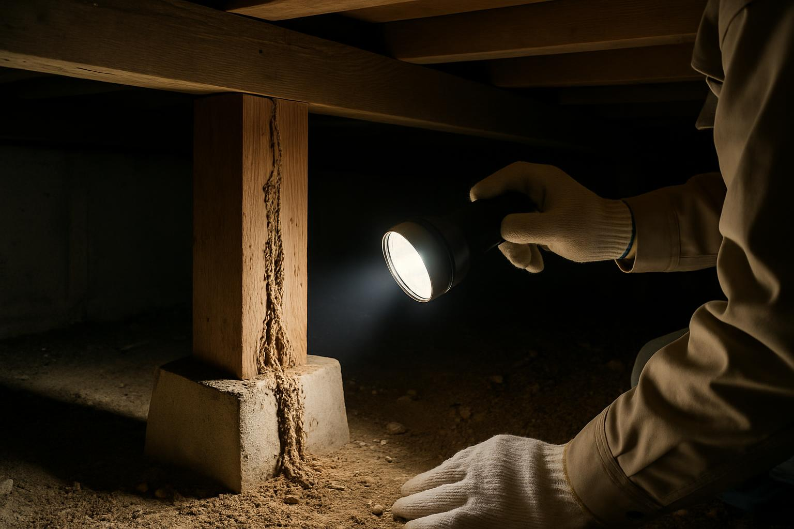

床下や小屋裏の被害は、点検しない限り気づけないまま進行します
空き家でもっとも静かに進むのが、シロアリと害獣の被害です。人の出入り・生活音・日々の換気がなくなると、床下や小屋裏には湿気がこもり、外からは分からないうちに柱や土台が食害されていることがあります。
この記事では、鹿児島で特に注意したいシロアリの種類、床下・小屋裏の点検ポイント、駆除にかかる費用の目安、そして再発を防ぐ管理の考え方をまとめます。
空き家がシロアリ・害獣に狙われやすい理由
人が住んでいる家との最大の違いは、被害の発見が遅れ、その間に広がってしまうことです。空き家では次のような条件が重なりがちです。
換気されず床下に湿気がこもる。水回りを長く使わないため排水トラップの封水が蒸発し、配管を通じて虫や臭気の経路ができる。庭木や雑草が伸びて建物際が湿りやすくなる。人の気配がないため、天井裏や床下が害獣の格好の営巣場所になる――こうした要因が、被害を加速させます。
鹿児島で注意したいイエシロアリ
日本の建物を加害するシロアリは、主にヤマトシロアリとイエシロアリです。このうちイエシロアリは温暖な地域に多く、鹿児島県内でも沿岸部を中心に生息域が広がっているとされています。加害の進み方が速く、水を運んで乾いた木材まで食べ進むため、1階だけでなく2階や小屋裏まで被害が及ぶこともあります。
羽アリが飛び立つ時期は種類で異なり、ヤマトシロアリは春の日中、イエシロアリは初夏から夏にかけての夜、灯りに集まる傾向があります。
シロアリ以外の害獣・害虫
| 生き物 | 空き家で起きやすい被害 |
|---|---|
| ネズミ | 配線をかじることによる漏電・火災リスク、糞尿による汚染と悪臭 |
| ハクビシン・アライグマ | 天井裏での営巣、糞尿による天井の腐食・シミ、ノミ・ダニの発生 |
| スズメバチ・アシナガバチ | 軒下や屋根裏への営巣。内見・解体・草刈りの際に刺傷の危険 |
| ネコ・ハト | 敷地内・床下への住み着き、鳴き声や糞害による近隣トラブル |
いずれも、侵入して住み着いてからでは対処の手間と費用が跳ね上がります。入られる前に隙間をふさぐことが基本の対策です。
点検のポイント
- 床下：土台・大引き・束柱に蟻道（土の筋）がないか、木部の空洞音、基礎の湿り、断熱材の脱落
- 室内：床のきしみ・沈み、ドアや窓の建て付けの悪化、窓際の羽アリの翅
- 小屋裏：獣の糞・尿臭、断熱材の乱れ、外光が漏れる隙間
- 外周：床下換気口の網の破れ、換気口の詰まり、建物際への植木鉢・木材・段ボールの直置き
床下や小屋裏は無理に自分で潜らず、点検口から懐中電灯で照らして確認できる範囲にとどめ、異変があれば専門業者に依頼するのが安全です。
駆除・予防にかかる費用の目安
シロアリ防除（薬剤を土壌・木部に処理するバリア工法）の費用は、1平方メートルあたり1,300〜2,500円程度が一つの目安で、一般的な広さの戸建てで15〜25万円前後になることが多いようです。被害が進んで柱や土台の補修が必要な場合は、木部の工事費が別途かかります。いずれも建物の状態で変わるため、現地調査を受けたうえで見積もりを確認してください。
防除の保証期間は通常5年で、5年ごとの再施工・再点検が基本サイクルです。害獣は、侵入口の封鎖・清掃・消毒で数万円から十数万円が目安ですが、営巣が進んでいると高額になります。
最後に床下を見たのは、いつですか？
しばらく点検していない空き家は、一度、床下と小屋裏の状態を確認しておくと安心です。